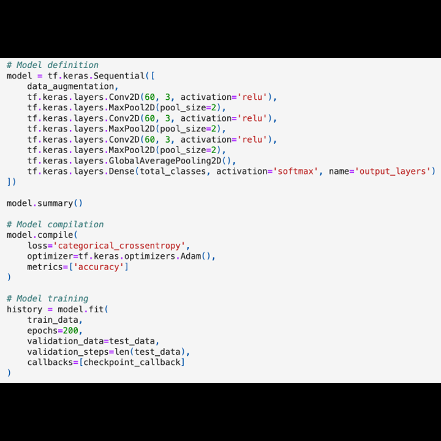

Check My potatoes
Image analysis · Tensorflow · Deep Learning · Keras · CSV · Numpy · Matplotlib
Check My Potatoes 🥔 aims to predict, using photos, whether a potato plant is diseased and at what stage, based on the color of its leaves. Thanks to noise augmentation created on the images from the database 🌿📷 and the developed multilayer perceptron, the predictions turned out to be correct in 99.80% of cases ✅ (healthy 🟢, recently affected by late blight âš ï¸, affected for a long time ❌).


